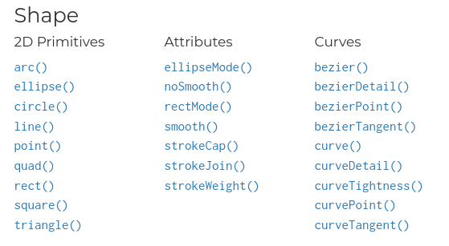
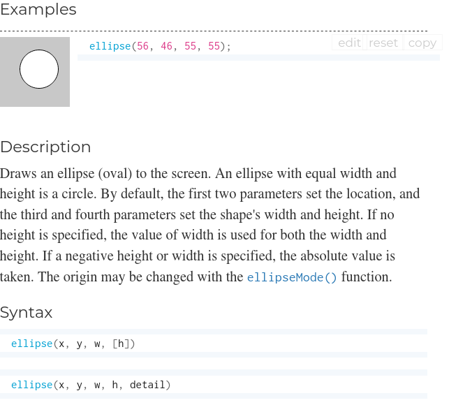
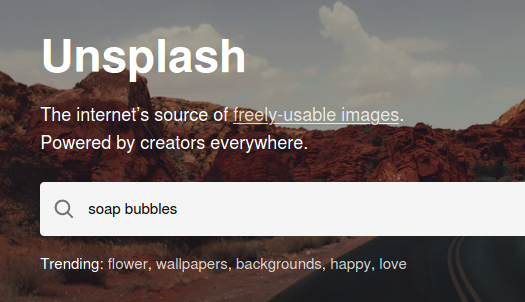
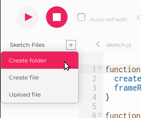
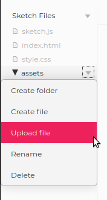
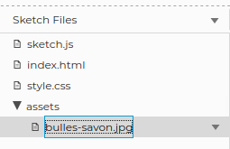
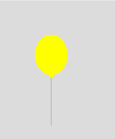

Petit défi pour découvrir les fonctions, créer un GIF et se rappeler que le savon, ça peut aussi servir à faire des bulles!
Commencer !Petit défi pour découvrir les fonctions, créer un GIF et se rappeler que le savon, ça peut aussi servir à faire des bulles!
Commencer !🗨️ For the english version click here!
Avant de t'attaquer à ce défi, on te conseille de compléter les défis suivants:
Première chose avant de commencer à travailler sur n'importe quel projet p5.js: connecte-toi à ton compte en cliquant sur "Log in".

Renomme ton projet en cliquant sur le petit crayon .
Ça semble bête à dire... mais n'oublie pas de te connecter à ton compte avant de commencer à travailler! Cela te permettra de sauvegarder gratuitement ton travail (tes sketchs) sur les serveurs de p5.js. Si tu ne le fais pas, tu dois alors télécharger les fichers localement (sur ton ordinateur) et s'il arrive quoique ce soit, tu risques de perdre tout ton travail 😢
En cliquant par ici, tu trouveras un aperçu de ce qu'on va coder. À vrai dire, tu viens de voir la solution du défi! Est-ce que c'est tricher? Pas du tout! Lire le code de devs plus avancés fait partie de l'apprentissage!
Ce code contient de nombreuses fonctions. Les fonctions servent à donner des instructions à l'ordinateur et sont très utiles pour ne pas avoir à répéter toujours les mêmes instructions. Tu utilises déjà plein de fonctions dans tes programmes. color(), par exemple, est une fonction qui permet de créer une couleur grâce à la librairie p5.js. ellipse() est une fonction qui dessine une ellipse (ou un cercle). Te souviens-tu de la fonction pour dessiner une ligne?
Eh oui, c'est line().
Tu as peut-être noté que lorsqu'on parle de fonctions, on ajoute des parenthèses ( ) après le nom de la fonction. C'est que les fonctions peuvent prendre des paramètres, que l'on va mettre entre les parenthèses. Voici un exemple:
textSize(50);
Entre les parenthèses, j'ai ajouté le nombre 50. Ce nombre représente la taille de mon texte. Si j'avais codé
textSize(100);
mon texte serait deux fois plus grand! Les paramètres sont importants car ils peuvent faire une grosse différence sur le résultat de ma fonction.
Certaines fonctions prennent plusieurs paramètres:
ellipse(150, 130, 100);
Ici, il y avait trois paramètres 150, 130 et 100. Finalement, certaines fonctions ne prennent aucun paramètre:
noStroke();
La fonction noStroke() ne prend pas de paramètres, mais on garde quand même les parenthèses pour indiquer que si la fonction prenait des paramètres, c'est là où ils iraient. Et puis, pour nous devs, c'est un bon indice pour savoir que c'est une fonction (et non pas une variable, par exemple).
La plupart du temps, on utilise des fonctions qui existent déjà dans la librairie p5.js. color(), noStroke(), ellipse(), etc. sont toutes des fonctions qui existent déjà!
Tu peux toujours vérifier si une fonction existe dans la librairie p5.js en allant chercher dans la documentation (la documentation, c'est comme une dictionnaire qui recense toutes les fonctions de la libriarie).
Dans la documentation, tu peux cliquer sur chaque fonction individuellement pour obtenir une description et des exemples (en anglais).
À partir de maintenant, tu devrais toujours avoir un onglet ouvert dans ton navigateur avec la documentation de p5.js. C'est suuuuuuuuper utile!
Parfois, on veut coder nos propres fonctions car elles n'existent pas dans la librairie p5.js ou en JavaScript. Dans ce cas-là, on doit d'abord définir notre fonction en utilisant le mot clé... attention... ça va être très surprenant... le mot clé function!
function drawBubble(positionX, color, letter) {
fill(color);
ellipse(positionX, 130, 100);
// lettre
textStyle(BOLD);
textSize(50);
fill(0,0,0);
text(letter, positionX-15, 145);
}
Ici, j'ai défini la fonction drawBubble() avec trois paramètres (positionX, color et letter. J'ai ensuite ouvert les accolades { } et à l'intérieur j'ai mis les instructions de ma fonction. Note que j'ai utilisé d'autres fonctions à l'intérieur de ma fonction drawBubble() 🤯
Après cette longue introduction, revenons à nos moutons 🐑 🐑 🐑 🐑! Notre code contient de nombreuses fonctions. Seize (16) pour être exact! Peux-tu les trouver toutes? Insère-les dans le formulaire suivant et clique sur Corriger.
N'ajoute pas les paramètres des fonctions, mais n'oublie pas de mettre les deux parenthèses. Exemple: ellipse()
Et n'hésite pas à te référer à la documentation pour vérifier...
Pour donner un peu de peps à notre animation, on va insérer une image en arrière-plan. Voici les étapes:
Ces étapes sont très semblables à celles que tu as suivies pour changer la police dans ton projet prédictions
Pour trouver une belle image (gratuite!) tu peux aller sur le site Unsplash et taper soap bubbles (bulle de savon en anglais).
Tu peux bien entendu aussi trouver une image en allant dans un moteur de recherche de ton choix. Télécharge l'image sur le Bureau de ton ordinateur, par exemple.
Pour importer le fichier de ta photo dans ton projet p5.js, tu peux créer un dossier "assets":
assets, ça veut dire "éléments graphiques" en anglais. C'est le dossier dans lequel on peut mettre des images, des gifs, des polices, des sons, etc. Tu n'es pas obligé de créer un dossier assets, mais c'est une bonne idée de le faire, car un jour, ton projet pourrait avoir beaucoup plus d'images, et tu ne voudrais pas qu'elles soit éparpillées à plusieurs endroits différents.
Dans le dossier assets, charge ton image.
 Dernière étape: le JavaScript! Dans ton code, rajoute les lignes suivantes:
let img;
function preload() {
img = loadImage('assets/XXXX');
}
function setup() {
createCanvas(400, 400);
image(img, 0, 0);
}
Remplace les XXXX par le nom du fichier de ton image. Respecte la casse (les majuscules et les minuscules!)
Si l'image est trop grande, tu peux changer sa taille avec la fonction resize():
function setup() {
createCanvas(400, 400);
img.resize(400, 0);
image(img, 0, 0);
}
Rappelle-toi que tu peux également changer la taille du canevas grâce à la fonction createCanvas().
Tu peux utiliser la fonction fill() pour donner une couleur à ta bulle. Pour donner un aspect plus "véridique" à ta bulle, essaye de lui donner une couleur légèrement transparente.
Pour une couleur transparente, il faut d'abord trouver le code de la couleur en RGB (RED, GREEN, BLUE:
rgb(0, 255, 0)
Pour ajouter de la transparence, on utilise le code RGBA, avec un quatrième nombre en 0 et 1:
rgba(0, 255, 0, 0.6)
Combiné avec la fonction color() de p5.js, on obtient une couleur qu'on stocke dans la variable bubbleColor et qu'on utilise ensuite dans la fonction fill():
let bubbleColor = color('rgba(0, 255, 0, 0.6)');
fill(bubbleColor);
En t'inspirant de l'étape 8 du défi Péter ta balloune, peux-tu faire bouger la bulle vers la gauche ou vers la droite?
Tu auras besoin d'une variable pour stocker la position sur l'axe des x de ta bulle. Tu devras également changer la valeur de la position en x à chaque fois que la fonction draw() est appelée (c'est à dire au moins 30 fois par secondes).
Au lieu de faire apparaître notre ballon à différents endroits de notre canevas, on va le faire bouger du bas du canevas vers le haut. Pour cela il faut que la position du ballon sur l'axe des Y change! À chaque fois que la fonction draw() est appelée, la position en Y doit avoir... diminué ou augmenté?🤔
Diminué... vu que l'origine de ton canvas et en haut à gauche. La position en Y va commencer à 200, puis 199, 198...
À l'étape 4, on avait stocké la vaeur de la position en X dans une variable positionX. Cette fois-ci, on va stocker la valeur de la position en Y dans une variable réutilisable:
fonction draw() {
// plein de beau code...
let positionY = 200;
ellipse(200, positionY, 65, 80);
// plein de beau code...
}
Maintenant, diminuons la valeur de cette variable. Pour augmenter la valeur d'une variable de 1, on peut écrire ceci: positionY++ ou ceci: positionY += 1. À ton avis, comment faire pour diminuer la valeur?
Lance ton code pour tester... Notre ballon reste en place 😢. Même problème que pour les couleurs aléatoires de l'étape précédente! On ne peut pas déclarer ta variable positionY dans la fonction draw(), car cette dernière est appellée plusieurs fois par seconde. Et donc plusieurs fois par seconde, on replace le ballon à sa position verticale initiale (200).
Pour contourner ce problème, on doit déclarer notre variable positionY avant la fonction setup():
let colors = ["yellow", "peachpuff", "seagreen"];
let balloonColor;
let positionY = 200;
fonction setup() {
// plein de beau code...
}
fonction draw() {
// plein de beau code...
ellipse(200, positionY, 65, 80);
// plein de beau code...
positionY--
}
Tu as sans doute noté qu'il va falloir également modifier le code de la tige du ballon pour qu'elle suive... C'est là où utiliser des variables s'avère très utile!C'est là où utiliser des variables s'avère très utile! Il se peut aussi que ton ballon s'envole très très lentement...
C'est que tu as un frameRate() très bas. À vrai dire, tu peux maintenant enlever complètement cette instruction de ta fonction setup().
Maintenant que notre ballon s'envole, essayons de voir comment le... péter 💪 La première chose à apprendre, c'est comment faire pour que l'ordinateur réagisse quand on clique sur le canevas. La librairie p5.js est très utile pour ça, car elle a plein de fonctions qui servent à détecter les actions de l'utilisateur sur son écran.
La fonction qu'on va utiliser s'appelle mouseClicked (souris cliquée).
On va utiliser la fonction mouseClicked après les fonctions setup() et draw(). La première instruction qu'on va mettre dans la fonction mouseClicked, c'est une instruction pour afficher quelque chose dans la console (l'espace en-dessous de ton code).
Chaque fois que tu cliques sur le canevas, tu vois le mot "cliqué!" apparaître dans la console. Bien sûr, notre but n'est pas d'afficher un message dans notre console mais plutôt de faire "disparaître" notre ballon.
On ne va pas effacer le ballon. On va en donner l'illusion! En fait, on va repositionner le ballon en bas du canevas et on va changer sa couleur. Ni vu ni connu!
À ton avis, que faut-il coder dans la fonction mouseClicked() pour changer la position et la couleur du ballon?
function mouseClicked() {
// pour choisir une nouvelle couleur
balloonColor = random(colors);
// pour replacer le ballon au bas du canevas
positionY = ???;
}
Remplace les ??? de mon code par la valeur en Y qui te permettra de positionner ton ballon en bas du canevas.
Dès qu'on clique n'importe où sur notre canevas, le ballon retourne au bas du canevas. Sympa... mais le ballon ne devrait faire cela que lorsqu'on clique sur celui-ci!
C'est le temps de mettre une condition à notre retour au bas du canevas. La syntaxe d'une condition en JavaScript est la suivante:
if (CONDITION) {
// CODE À EXÉCUTER
}
On connaît déjà que notre code à exécuter. C'est celui qu'on avait avant!
function mouseClicked() {
if (CONDITION) {
// pour choisir une nouvelle couleur
balloonColor = random(colors);
// pour replacer le ballon au bas du canevas
positionY = 400;
}
}
Et maintenant, la condition! Comment exprimer en code "quand l'utilisateur clique le ballon"? Rappelle-toi que dans une animation (comme dans beaucoup de jeux vidéo), tout est une question de coordonnées. Du coup, on va vérifier la distance de notre souris par rapport au centre de notre ballon. Et bien entendu, il existe une chouette fonction p5.js pour calculer la distance entre deux points: dist()
Observe les paramètres de la fonction. C'est un peu comme pour la fonction line(), il y a 4 paramètres qui représentent les coordonnées des deux points dont on mesure la distance.

Notre premier point en bleu est le centre du cercle (ou de l'ellipse) qui forme le ballon. Le second point en rouge est l'endroit où le joueur a cliqué. Pour le point rouge, tu peux obtenir les coordonnées avec deux variables spéciales de p5.js appellées mouseX et mouseY.
Pour obtenir la distance, tu peux donc coder ceci: let d = dist(x1, y1, mouseX, mouseY); À toi de remplacer x1 et x2 par les variables appropriées!
Pour la position en Y, tu as déjà une variable positionY. Pourrais-tu également avoir une variable en X? Regarde à l'étape 8 comment on a fait pour déclarer la variable positionY
Maintenant, utilises console.log(d) pour voir la distance s'afficher à chaque fois que tu cliques:

Combine maintenant la distance avec la condition:
function mouseClicked() {
let d = dist(positionX, positionY, mouseX, mouseY);
if (d ????) {
// pour choisir une nouvelle couleur
balloonColor = random(colors);
// pour replacer le ballon au bas du canevas
positionY = 400;
}
}
Remplace les ???? dans mon exemple et voilà, le tour est joué! Bravo!!!!
Pour rendre notre jeu plus intéressant, rien de tel que des points! Chaque ballon éclaté rapportera des points au joueur. Comment pourrait-on coder cela? 🤔
Je vois trois étapes:
Commençons par la première étape. Qui dit "l'ordinateur se rappelle" ou "l'ordinateur stocke de l'information" dit bien entendu... variables!
Créons une variable, comme on l'a fait pour positionX, positionY ou encore colors. À quel endroit de ton code dois-tu déclarer ta variable?
setup() et draw()?setup()?draw()?mouseClicked()?Réponse 2! Au tout début de ton programme, comme ceci:
let colors = ["yellow", "peachpuff", "seagreen"];
let balloonColor;
let positionY = 200;
let positionX = 100;
let points = 0;
Si tu déclares ta variable points dans la fonction setup(), tu ne pourras pas y avoir accès dans la fonction draw().
Si tu déclares ta variable points dans la fonction draw(), tu n'arriveras jamais à faire augmenter le nombre de points, car la variable sera constamment ré-initialisée à 0.
Même chose si tu déclares ta variable dans la fonction mouseClicked(): la variable sera ré-initialisée à 0 dès que tu cliqueras sur le ballon.
Comment faire pour afficher du texte sur notre canevas? On l'a fait dans notre challenge prédictions. Il y a une fonction très utile en p5.js... Te souviens-tu laquelle?
C'est la fonction text()
Cette fois-ci, où devrait-on utiliser cette fonction?
setup() et draw()?setup()?draw()?mouseClicked()?Dans la fonction draw() car le nombre de points va évoluer au fil du jeu.
Comment faire en sorte que notre fonction affiche le nombre de points?
Tu pourrais utiliser la fonction text() ainsi:
text("points: 7", 10, 30);
Le problème, c'est que ton jeu afficherait toujours 7 points. Pas très utile. Par contre, si tu utilises une variable dans la fonction text, alors ça devient intéressant:
let points = 7;
// les autres parties de ton code...
text("points: " + points, 10, 30);
"points: " + points ça veut dire qu'on colle le mot "points: " avec la valeur de la variable points. Si dans la valeur vaut 5, alors on verra affiché "points: 5". Si la valeur vaut 34, alors on verra affiché "points: 34"
Pose-toi toujours la même question! Où dois-tu changer la valeur de la variable points?
setup() et draw()?setup()?draw()?mouseClicked()?Cette fois-ci, c'est dans la fonction mouseClicked()! Les points n'augmentent que lorsque le joueur clique sur le ballon!
Ta fonction aura l'air de quelque chose comme ceci:
function mouseClicked() {
let d = dist(positionX, positionY, mouseX, mouseY);
if (d < circleDiameter) {
// changer la couleur du ballon
balloonColor = random(colors);
fill(balloonColor);
// repositionner le ballon en bas de l'écran
positionX = random(0, canvasWidth);
positionY = height +circleDiameter/2;
// augmenter les points
points ????
}
}
N'oublie pas de remplacer les ???? par le code approprié. Petit rappel, pour faire diminuer de 1 une variable, on peut écrire ceci: points-- ou points -= 1.
Ajoutons une limite de temps ⏲️ pour mettre un peu de pression sur nos joueurs! Le temps, c'est quelque chose qui existe dans presque tous les jeux.
En p5.js, il n'y a pas vraiment de fonction qui dise à l'ordinateur "Arrête-toi au bout de 15 secondes". On va néanmoins essayer de bidouiller une sorte de compte à rebours (timer en anglais).
Première étape: déclarer une variable (eh oui, encore une autre!) qui stockera le nombre de secondes du jeu:
let timerValue = 10; // le jeu va durer 10 secondes
Ensuite, on va utiliser une fonction JavaScript pure (pas une fonction de la librairie p5.js) qui va commencer le compte à rebours: setInterval()
La fonction setInteval() est un peu comme la fonction draw() de la librairie p5.js dans la mesure où elle s'exécute en boucle.
Examinons ce code:
setInterval(rainbow, 2000);
function rainbow() {
// du beau code qui dessine un arc-en-ciel
}
Comme tu peux le constater, la fonction setInterval prend deux arguments: rainbow et 2000. Le premier argument, qu'on appelle en langage technique callback, c'est le code à exécuter après chaque interval (ici, la fonction rainbow). Le second argument, c'est la longueur de l'intervale en millisecondes. 2000 millisecondes, c'est l'équivalent de... 2 secondes!
En d'autres mots, l'ordinateur va exécuter la fonction rainbow chaque 2 secondes.
Dans la fonction setup() de ton code, tu peux donc ajouter la ligne suivante:
function setup() {
createCanvas(400, 400);
//...
setInterval(subtractSecond, ????);
}
À toi de remplacer les ???? pour que la fonction subtractSecond se déclenche toutes les secondes (pense à la valeur d'une seconde en millisecondes).
Étape suivante: coder la fonction subtractSecond() qui veut dire en français "retranche une seconde". À la toute toute fin de ton programme (après la fonction mouseClicked(), tu peux coder la fonction ainsi:
function subtractSecond() {
// code pour soustraire une seconde
}
Peux-tu trouver le code de la fonction? Pense à comment tu as changé la valeur de la variable positionY ou encore comment tu as additionné les points de ta variable points.
Utilise console.log(timerValue); pour t'assurer que le temps restant diminue. Comment faire pour que le temps restant n'aille pas dans le négatif? Peut-être qu'une condition pourrait aider...
Dernière étape: faire en sorte que le jeu s'arrête lorsqu'il ne reste plus de temps! Pour se faire, tu dois retourner dans la fonction draw() et utiliser la fonction noLoop() qui va avoir pour effet de cesser la répétition en boucle de la fonction draw():
function draw() {
// code pour dessiner le ballon
// code pour que le ballon s'envole
// code pour afficher les points
if (????) {
noLoop(); // le jeu s'arrête
}
}
Dernier conseil: après avoir utilisé la fonction noLoop(), tu peux encore montrer sur ton canevas le score final avec un message. Par exemple: "Tu as récolté 320 points, bravo!" ou "Tu n'as eu que 20 points, meilleure chance la prochaine fois".
Bravo de t'être rendu-e à la fin de ce défi!!!🏅
Voici quelques idées pour rendre ton jeu encore plus sympathique: